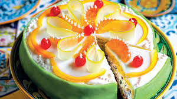
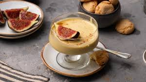
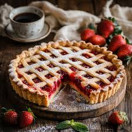
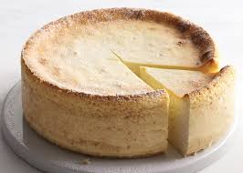
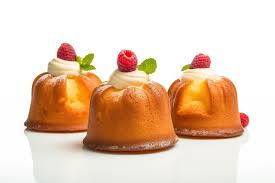
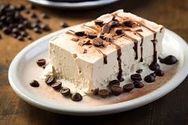
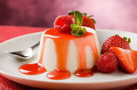

Tiramisu

Mascarpone, kedi dili ve kahve ile hazırlanan İtalyan tatlısı.
Malzemeler
- Mascarpone peyniri: 500 g
- Kedi dili: 200 g
- Kahve: 150 ml
- Yumurta: 4 adet
- Şeker: 100 g
- Parmesan: 50 g (isteğe bağlı)
Tarif
- Yumurtaları ve şekeri çırpın, mascarpone peynirini ekleyin ve karıştırın.
- Kahveyi bir kaba koyun, kedi dillerini kahveye batırın ve bir tepsiye yerleştirin.
- Mascarpone karışımını kedi dillerinin üzerine dökün.
- Üzerine kakao serpip soğutun, servis edin.
Cassata Siciliana
Ricotta peyniri, şeker ve sünger kek ile yapılan Sicilya tatlısı.
Malzemeler
- Ricotta peyniri: 500 g
- Şeker: 200 g
- Sünger kek: 300 g
- Şeker şurubu: 100 ml
- Sakız: 5 g
Tarif
- Ricotta peyniri ve şekeri karıştırın.
- Keki şeker şurubuna batırıp kalıba döşeyin.
- Ricotta karışımını üzerine dökün, buzdolabında soğutun.
- Servis etmeden önce üzerine sakız serpiştirin.
Zabaglione
Yumurta sarısı, şeker ve Marsala şarabı ile hazırlanan hafif bir tatlı.
Malzemeler
- Yumurta sarısı: 6 adet
- Şeker: 100 g
- Marsala şarabı: 150 ml
Tarif
- Yumurta sarılarını şekerle çırpın.
- Şarabı ekleyin ve karışımı benmari usulü ısıtın.
- Karışım koyulaşınca ocaktan alın ve soğutun.
- Soğuyan tatlıyı bardaklara dökün ve soğutun.
Crostata
Meyve reçeli ile yapılan geleneksel bir tatlı.
Malzemeler
- Un: 300 g
- Şeker: 150 g
- Yumurta: 2 adet
- Tereyağı: 150 g
- Meyve reçeli: 200 g
Tarif
- Un, şeker, yumurta ve tereyağını karıştırarak hamur yoğurun.
- Hamuru açıp tart kalıbına yerleştirin ve üzerine reçeli ekleyin.
- Fırında 180°C’de 25-30 dakika pişirin.
- Soğuyunca dilimleyip servis edin.
Ricotta Cheesecake
Ricotta peyniriyle yapılan klasik bir cheesecake tarifi.
Malzemeler
- Ricotta peyniri: 500 g
- Labne peyniri: 200 g
- Yumurta: 3 adet
- Şeker: 150 g
- Vanilya: 1 paket
- Bisküvi: 200 g
- Tereyağı: 100 g
Tarif
- Bisküvileri ezip, eritilmiş tereyağını ekleyip tabanına yerleştirin.
- Ricotta, labne, yumurta, şeker ve vanilyayı çırpın ve karışımı bisküvi tabanının üzerine dökün.
- Fırında 180°C’de 40-45 dakika pişirin ve soğutun.
- Soğuyunca dilimleyip servis edin.
Tartufo
Çikolata ve dondurma ile yapılan dondurulmuş bir tatlı.
Malzemeler
- Vanilyalı dondurma: 500 g
- Çikolata: 200 g
- Fındık: 50 g
Tarif
- Dondurmayı toplar haline getirin.
- Çikolatayı eritin ve dondurma toplarını çikolataya batırın.
- Fındıkları üzerine serpip dondurun.
- Soğuyunca servis edin.
Baba au Rhum
Rom şurubunda ıslatılmış hamur tatlısı.
Malzemeler
- Un: 300 g
- Yumurta: 4 adet
- Süt: 100 ml
- Şeker: 100 g
- Rom: 100 ml
- Yasemin şurubu: 150 ml
Tarif
- Un ve yumurtayı karıştırıp mayayı ekleyin, hamuru yoğurun.
- Hamuru mayalandırıp fırında pişirin.
- Fırından çıkarınca rom şurubuyla ıslatın ve soğutun.
- Soğuyunca üzerine şurup dökün ve servis edin.
Semifreddo
Yarı dondurulmuş tatlı, çikolata veya meyve ile servis edilir.
Malzemeler
- Yumurta: 3 adet
- Şeker: 150 g
- Çikolata: 100 g
- Şanti: 200 ml
Tarif
- Yumurta ve şekeri çırpın, çikolatayı eritin.
- Çikolata karışımını ekleyip şanti ile karıştırın.
- Bir kaba dökün, buzdolabında 3-4 saat soğutun.
- Soğuduktan sonra dilimleyip servis edin.
Panna Cotta
Kremalı, hafif ve serinletici bir İtalyan tatlısı.
Malzemeler
- Krem şanti: 500 ml
- Süt: 100 ml
- Şeker: 100 g
- Jelatin: 1 paket
Tarif
- Krem şanti ve sütü karıştırıp ısıtın.
- Şekeri ekleyip karıştırın, jelatini ekleyin ve karıştırarak eritin.
- Karışımı kalıplara dökün ve buzdolabında 4 saat soğutun.
- Soğuduktan sonra dilimleyip servis edin.